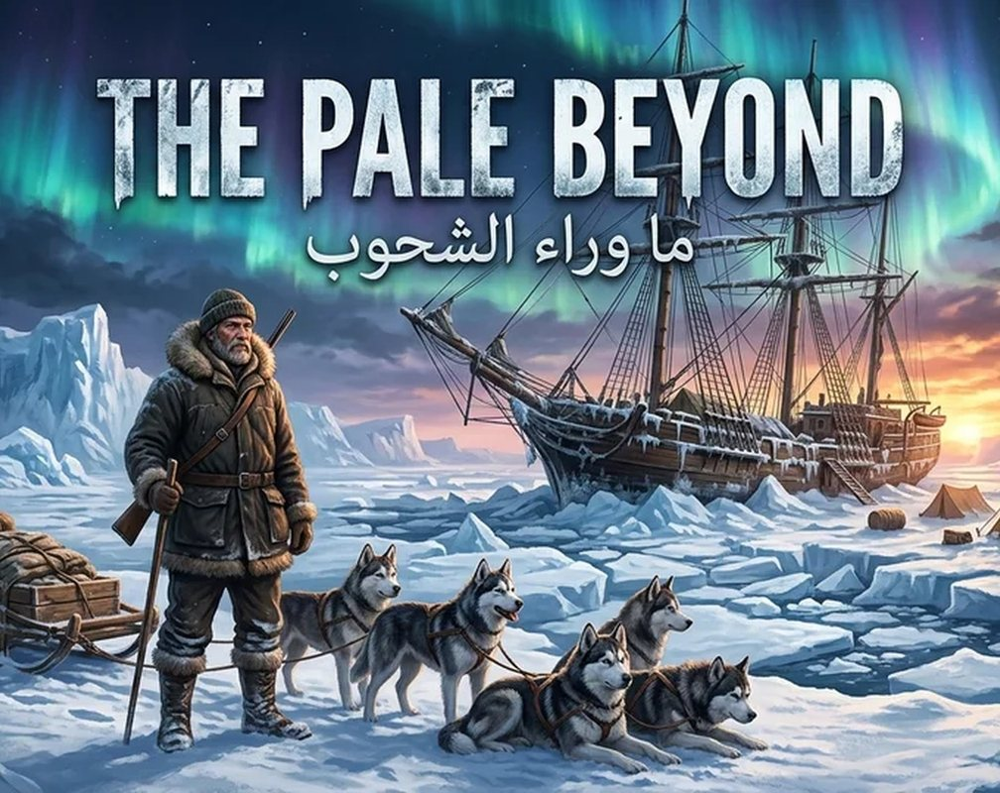

بقاء سردي وقصة واختيارات
مكتمل 100%
تعريب لعبة The Pale Beyond (ما وراء الشحوب) بالعربي
تعريب كامل وشامل للعبة البقاء السردية The Pale Beyond (ما وراء الشحوب). يغطي التعريب السجل الشخصي واليوميات، جميع الحوارات والاختيارات المصيرية مع طاقم السفينة، خريطة الإبحار في البحر المتجمد، وشاشات إدارة الوقود والحرارة والمؤن بصياغة عربية رصينة.
⚡ مجاني 100% للعب عبر الإعلانات (LootLabs)
🛡️ ملفات نظيفة ومفحوصة للنسخ الأصلية
↩️ استعادة اللغة الأصلية بضغطة زر